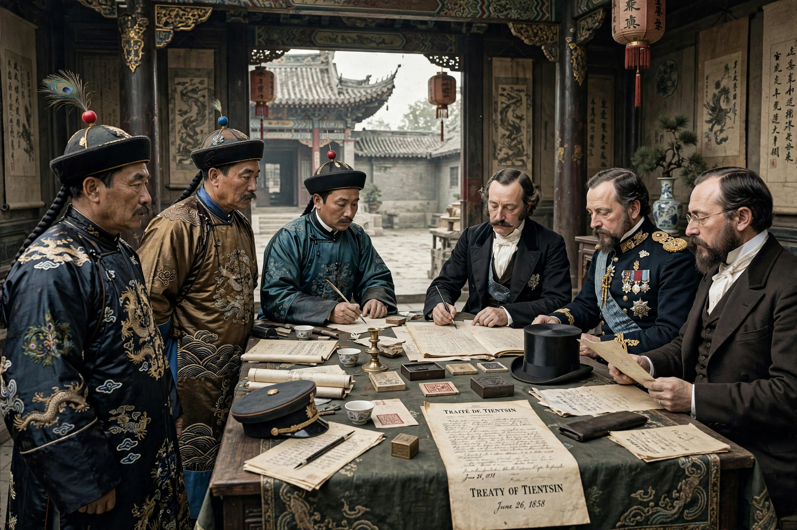

The Treaties of Tianjin, signed in June 1858, were agreements between the Qing dynasty of China and France, the United Kingdom, Russia, and the United States that ended the first phase of the Second Opium War. The treaties opened more Chinese ports to foreign trade, permitted foreign legations in Beijing, allowed Christian missionary activity, and legalised the import of opium.

Following the outbreak of the Arrow War in 1856, British and French forces captured Guangzhou and advanced north. The Qing court under the Xianfeng Emperor, faced with the concurrent Taiping Rebellion, agreed to negotiate at Tianjin.
The treaties provided for resident foreign ministers in Beijing, the opening of ten new treaty ports including Niuzhuang, Dengzhou, Taiwan, Shantou and Qiongzhou, navigation of the Yangtze River by foreign vessels, freedom for foreigners to travel in the interior, and indemnities to Britain and France. Russia gained recognition of its Amur frontier, later expanded by the Convention of Peking.
When Qing forces resisted enforcement in 1859 at the Taku Forts, Britain and France resumed war, occupied Beijing in 1860, and imposed the Convention of Peking, which ratified Tianjin and ceded Kowloon to Britain. The treaties are remembered in China among the "unequal treaties".